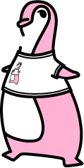

Conference Info Menu
Women In Open Source
February 8th, 2008
The SCALE 6X Women In Open Source conference continues last year's work in encouraging women of all ages to participate in the Free and Open Source Software (FOSS) community. The WIOS conference will be held on Friday, February 8th, prior to the 6th Annual So Cal Linux Expo.
As a woman, if you've had experience working on an Open Source project, or in deploying Open Source software, please join us in sharing your accomplishments, success stories, and advancements.
View the Women In Open Source flyer
Friday Feb 8th Schedule
| Time | WIOS | ||||
| 8:00am-9:00am | Registration | ||||
| 9:00am-9:50am | Allison Randall The Art of Conference Presentations |
||||
| 9:50am-10:00am | Break | ||||
| 10:00am-10:50am | Emma McGrattan From the Keyboard to the Board Room and Back Again |
||||
| 10:50am-11:00am | Break | ||||
| 11:00am-11:50am | Susan Kuchinskas Women and Open Source: A Match Made In Hormones |
||||
| 11:50am-1:00pm | Lunch | ||||
| 1:00pm-1:50pm | Stormy Peters What does a community manager do? |
||||
| 1:50pm-2:00pm | Break | ||||
| 2:00pm-2:50pm | Addison Berry Open Source Mentoring |
||||
| 2:50pm-3:00pm | Break | ||||
| 3:00pm-3:50pm | Angela Byron Building Websites with Drupal |
||||
| 3:50pm-4:00pm | Break | ||||
| 4:00pm-4:50pm | Adaora Onyia and Susan Bowen Hello, Can Anyone Hear Me? |
||||
| 4:50pm-5:00pm | Break | ||||
| 5:00pm-5:50pm | Danese Cooper Why Whinging Doesn't Work |
||||
| 5:50pm-6:00pm | Break | ||||
| 6:00pm-6:50pm | Panel Discussion Women In Open Source |
||||